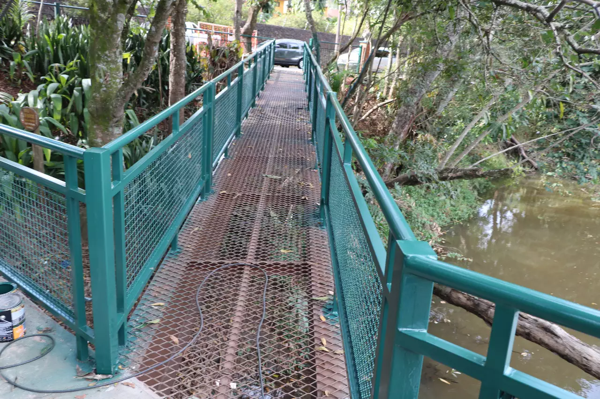

planeje suas viagens de maneira inclusiva
Turismo Acessível:
viaje sem limites
Acreditamos que viajar deve ser uma experiência enriquecedora e acessível para todas as pessoas, independentemente de suas limitações físicas, sensoriais ou mentais. Nosso objetivo é fornecer informações úteis e práticas para ajudá-lo(a) a planejar suas viagens de forma segura e confortável.
INCLUSÃO


RIO DE JANEIRO
O mais conhecido é o projeto Praia Para Todos que acontece apenas nos meses mais quentes do Rio (dezembro a abril).
FOZ DO IGUAÇU
Por lá, é relativamente fácil encontrar vagas demarcadas, rampas nos estacionamentos, e piso tátil nas principais vias. Além disso, os ônibus do transporte público contam com elevadores e a maioria dos pontos turísticos são adaptados ou estão em processo.
BROTAS-SP
Além disso, os parques de aventura da cidade vem cada vez mais investindo em acessibilidade para incluir a todos nos roteiros de ecoturismo.
RIO DE JANEIRO
O mais conhecido é o projeto Praia Para Todos que acontece apenas nos meses mais quentes do Rio (dezembro a abril).
O projeto conta com esteira de acesso, cadeiras anfíbias e mais atividades como surfe e vôlei sentado, além de stand-up paddle e handbike em Copacabana.
O Praia Para Todos funciona aos sábado e domingos das 09 às 14h na Praia da Barra – Posto 3 (em frente à praça do Ó); Praia de Copacabana – Posto 6 (em frente à rua Júlio de Castilhos); e na Praia do Leblon – Posto 11 – Quiosque do Riba (em frente à rua Afrânio de Mello Franco).
FOZ DO IGUAÇU
A cidade, por receber milhões de turistas todos anos vindo de diversos lugares do mundo para conhecer as Cataratas do Iguaçu, procura sempre desenvolver sua acessibilidade.
Por lá, é relativamente fácil encontrar vagas demarcadas, rampas nos estacionamentos, e piso tátil nas principais vias. Além disso, os ônibus do transporte público contam com elevadores e a maioria dos pontos turísticos são adaptados ou estão em processo.
As próprias Cataratas do Iguaçu se destacam no quesito acessibilidade, e é um passeio obrigatório quando estiver por lá. Conheça também a Trilha do Poço Preto, o Macuco Safari (precisa avisar no guichê, no momento da compra das entradas, que você precisa do transporte adaptado) e o Espaço Naipi.
Aqui você pode conferir mais dicas de destinos acessíveis no Brasil.
BROTAS
Se você é aventureiro, Brotas precisa entrar no seu roteiro, afinal a cidade é conhecida como a capital nacional do turismo de aventura!
Além disso, os parques de aventura da cidade vem cada vez mais investindo em acessibilidade para incluir a todos nos roteiros de ecoturismo.
Por fim, vários são os parques da cidade que contam com trilhas e cachoeiras adaptadas para receber pessoas com mobilidade reduzida, além de agências especializadas em receber visitantes com mobilidade reduzida.